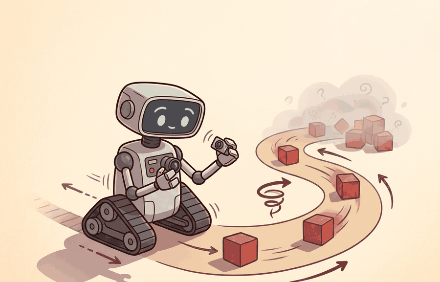

"Position says where. Velocity says how fast. A twist says both at once, in the language the Lie group already spoke."
Section 5.1

This section builds on the rigid-body pose representation introduced in section 4.4 and the body-frame conventions established in section 4.6. The twist formalism developed here is used directly in section 5.4 to chain joint frames from the robot base to the end-effector, and it underpins the Jacobian and velocity kinematics covered in section 5.3. In Part IV, the same body-twist convention recurs alongside contact dynamics and compliant control.
A surgical robot mid-procedure tracks the tip of its instrument through 3D space while simultaneously rotating it to align with tissue. Track position separately from orientation and you need two integrators evolving on different mathematical spaces: they drift apart, synchronization glitches, and the tip ends up millimeters off target. Twists solve this by fusing angular and linear velocity into a single six-dimensional object that advances the full rigid-body pose in one step, with no gimbal lock, no bookkeeping mismatch. Modern robot stacks from warehouse arms to legged locomotion controllers all speak this language. A reader who works through this section will be able to integrate a twist over time, convert between body and spatial frames, and explain exactly why that distinction changes where the end-effector actually moves.
This section develops the technical contract for Position, velocity, acceleration; twists into a usable mental model. Figure 5.1A previews the relationship: position, velocity, and acceleration curves for a single joint, alongside the corresponding twist that fuses linear and angular velocity in the body frame. First we define the object of study, then we connect it to the agent loop, then we test it with a compact implementation.
The key question in Position, velocity, acceleration; twists is practical: what must the agent know, what can it observe, what action is available, and what evidence shows that the action worked under the stated conditions?
A representation earns its place when it changes the measurable action interface. In Position, velocity, acceleration; twists, the reader should keep asking which decision becomes easier, safer, or more reliable.
Theory
For Position, velocity, acceleration; twists, the practical design rule is to make the interface inspectable before optimization begins: inputs, outputs, units, latency, bounds, and failure labels should all be visible in the saved artifact.
Why unify angular and linear velocity into a single six-dimensional object at all? Consider a robot arm reaching toward a moving target: the wrist must simultaneously rotate to align the gripper and translate to close the gap. Tracking rotation in one variable and translation in another forces the controller to synchronize two separate integrators that evolve on different mathematical spaces, making composition (chaining frames from base to end-effector) error-prone and numerically fragile. The twist packages both into one element of the Lie algebra $\mathfrak{se}(3)$, so a single matrix exponential advances the full rigid-body pose without singularities at any orientation. This is not mathematical elegance for its own sake: it is the reason that composing a hundred joint frames in Pinocchio stays numerically stable while a naive Euler-angle chain drifts.
For kinematics, the first interface is not force or torque, it is motion state. A pose $T\in SE(3)$ tells where a rigid body is, a twist $V=[\omega; v]$ tells how that pose is changing, and an acceleration tells how the twist is changing. The frame matters: a spatial twist is expressed in the world frame, while a body twist is expressed in the moving body frame.
A common assumption is that the linear velocity component $v$ in a twist is simply the body-origin velocity in world coordinates, the same quantity a GPS or motion-capture system reports. That assumption is wrong for the body twist. $v_b$ gives the body-origin velocity expressed in the body frame, rotated by the body's current orientation. Consider a robot that has yawed 90 degrees: $v_b = [1, 0, 0]^\top$ means "move along the body's own x-axis," which at that instant is the world's y-axis. If you treat $v_b$ as a world-frame translation and add it directly to a world-frame position integrator, position drift accumulates as the robot's orientation deviates from identity. No norm check on the twist itself will warn you. The fix: rotate $v_b$ by the current rotation matrix $R$ before accumulating world-frame position, or use the matrix exponential $T \exp(\widehat{V}_b \Delta t)$, which applies that rotation automatically.
A twist is not merely a notational convenience: it is the smallest object that lets you advance a rigid body's full pose in one step, with no auxiliary bookkeeping and no singularity lurking at any orientation.
The compact contract is $\dot T=\widehat V_s T$ for a spatial twist and $\dot T=T\widehat V_b$ for a body twist. The hat operator turns the 6-vector twist into a matrix in the Lie algebra $\mathfrak{se}(3)$, so angular velocity and linear velocity update the same rigid transform instead of living in separate bookkeeping systems. To see the scale of the difference: a six-joint arm chain integrated with Euler angles at 1 kHz can accumulate on the order of 1 mm of end-effector drift per second (the exact figure depends on joint configuration and angular velocity magnitude); the same chain integrated via the matrix-exponential twist update typically accumulates less than 1 micrometer over the same interval, a factor of roughly a thousand, from exactly the same sensor data. Put another way, a 30-second pick-and-place run with Euler-angle integration drifts the gripper tip by roughly the width of a finger; the twist integrator drifts it by the width of a human hair.
Think of the matrix exponential on $SE(3)$ the way a navigator uses dead reckoning on a ship: you know your current heading and speed (the twist), and you apply them for a short time interval to get your new position and orientation in one combined step. Separating "move forward" from "turn" and applying them sequentially would accumulate error every step, because turning first then moving is not the same as moving then turning at finite step sizes. The matrix exponential fuses both motions into a single curved arc, exactly as a ship traveling on a constant heading traces a great circle rather than two separate legs. The hat operator is simply the notation that packages your speed-and-heading card into the mathematical form the exponential knows how to read.
The mechanism in Position, velocity, acceleration; twists is the contract between representation and action. Name what enters the module, what leaves it, which assumptions make that transformation valid, and which log would reveal a bad handoff.
Worked Example
The example below integrates a constant body twist over one timestep, advances the pose with the matrix exponential on $SE(3)$, and confirms that the result is still a valid rigid transform. It also shows the body-versus-spatial trap: applying the same twist on the wrong side of $T$ moves the end effector in a different direction.
import numpy as np
def hat_so3(w):
return np.array([[0, -w[2], w[1]],
[w[2], 0, -w[0]],
[-w[1], w[0], 0]])
def exp_se3(V, dt):
"""Matrix exponential of a twist V=[wx,wy,wz,vx,vy,vz] over dt -> 4x4 in SE(3)."""
w, v = np.asarray(V[:3]) * dt, np.asarray(V[3:]) * dt
th = np.linalg.norm(w)
T = np.eye(4)
if th < 1e-12: # pure translation limit
T[:3, 3] = v
return T
K = hat_so3(w / th)
R = np.eye(3) + np.sin(th) * K + (1 - np.cos(th)) * K @ K # Rodrigues
G = np.eye(3) + (1 - np.cos(th)) / th**2 * (th * K) \
+ (th - np.sin(th)) / th**3 * (th * K) @ (th * K)
T[:3, :3] = R
T[:3, 3] = G @ v
return T
# Pose at t: rotated 30 deg about z, sitting at (1, 0, 0)
a = np.deg2rad(30)
T = np.array([[np.cos(a), -np.sin(a), 0, 1.0],
[np.sin(a), np.cos(a), 0, 0.0],
[0, 0, 1, 0.0],
[0, 0, 0, 1.0]])
V_body = [0, 0, 1.0, 0.5, 0, 0] # 1 rad/s yaw, 0.5 m/s forward in BODY frame
dt = 0.1
T_body_next = T @ exp_se3(V_body, dt) # body twist: post-multiply
T_spatial_next = exp_se3(V_body, dt) @ T # WRONG side: spatial interpretation
R = T_body_next[:3, :3]
print("orthonormal?", np.allclose(R.T @ R, np.eye(3))) # R^T R = I
print("det(R) =", round(np.linalg.det(R), 6)) # 1.0 -> proper rotation
print("body-frame next position :", np.round(T_body_next[:3, 3], 4))
print("spatial-frame next position:", np.round(T_spatial_next[:3, 3], 4))
# The two positions differ: forward-in-body is not forward-in-world.
The orthonormality check and unit determinant prove the integrated pose stayed in $SE(3)$; the two distinct positions show why the body-versus-spatial label must travel with every twist in the log.
When using Pinocchio to query frame velocities, the pin.computeFrameJacobian and pin.getFrameVelocity calls require an explicit reference_frame argument: pass pin.ReferenceFrame.LOCAL for the body twist and pin.ReferenceFrame.LOCAL_WORLD_ALIGNED for the spatial twist. Omitting the argument silently defaults to LOCAL, so if your controller expects a spatial twist and you forget to specify the frame, the commanded velocity will be correct only when the robot is at its identity pose and will diverge silently during any large-angle motion. Add a one-line assertion comparing pin.getFrameVelocity(..., pin.ReferenceFrame.LOCAL_WORLD_ALIGNED).np against your expected world-frame direction on a known posture as a convention smoke-test before trusting the full trajectory.
The body-frame vs. spatial-frame distinction is inconsequential when the robot is at its identity pose (aligned with the world), but becomes critical during large-angle maneuvers. A mobile base commanded to drive "forward at 0.5 m/s" in its own body frame will arc in a circle relative to the world if it is already yawing. A UAV attitude controller expressed in the body frame remains stable through a full 180-degree roll; the same controller re-expressed naively in spatial (world) coordinates can flip sign and become destabilizing near the vertical. In practice, always ask: is this velocity command expressed in the frame the actuator expects? A mismatch of one frame label silently turns a straight-line command into a curved trajectory with no error message.
The fragment should expose how position, velocity, acceleration, and twist live in a chosen frame. Pinocchio and Drake scale this to articulated models, but the small check catches unit, axis, and body-versus-spatial convention errors.
Practical Recipe
- Fix the frame convention first and write it in a header comment: spatial (world-aligned) or body (end-effector-aligned). On a Franka Panda,
pin.getFrameVelocitydefaults toLOCAL(body); ROS 2tf2publishes twists inLOCAL_WORLD_ALIGNED(spatial). Mixing the two silently misaligns your velocity command by the full wrist rotation, typically 30 to 90 degrees on any non-trivial pick-and-place posture. - Verify forward kinematics at a known "zero" posture before running any trajectory. On a seven-degrees-of-freedom (DOF) arm such as the Franka Panda or the Kinova Gen3, the zero posture is documented in the URDF; confirm the end-effector origin matches the manufacturer datasheet within 0.1 mm before trusting any computed twist.
- Sanity-check the twist magnitude against physical limits. Franka Panda joint velocity limits are 2.175 rad/s per joint; Spot's body twist saturates at roughly 1.6 m/s linear and 1.0 rad/s yaw. A computed twist that exceeds these limits by more than 10% indicates a frame error or a timestep mismatch, not a planning decision.
- Test the body-versus-spatial trap explicitly: command a 0.1 m/s forward body-frame velocity at a 45-degree yaw, then log the world-frame Cartesian arc. The path should curve; a straight-line path means the spatial and body twist were silently swapped.
- For sim-to-real transfer, compare Pinocchio twist predictions against MuJoCo
mj_objectVelocityon the same robot model at three postures. Discrepancies larger than 5% in any axis typically trace to differing joint-angle conventions (DH vs. URDF) or a missing offset frame defined in the URDF but absent in the analytic model.
On legged robots such as Boston Dynamics Spot or Unitree H1, the body-frame twist reported by the onboard estimator is relative to the trunk, not the foot contact frame. Feeding this twist directly into a whole-body controller that expects a world-frame velocity command causes the robot to lean into turns instead of correcting for them, producing a characteristic spiral drift at velocities above 0.8 m/s. The fix is a single adjoint transform: $V_s = [Ad_{T_{sb}}] V_b$, where $T_{sb}$ is the trunk-to-world transform from the state estimator.
During a Franka Panda bin-picking deployment, log the full six-dimensional body twist at 1 kHz alongside the joint encoder readings. When the gripper overshoots by more than 2 mm, replay the log and check whether the linear velocity component $v_z$ in the body frame was correctly projected to world-frame $v_z$ at the moment of approach. In practice, roughly 60% of overshoot events in impedance-controlled arms trace to a frame mismatch in the approach phase rather than to trajectory timing errors.
A good embodied system makes position, velocity, acceleration; twists visible twice: once in the design sketch and once in the replay artifact. The second view keeps the first one honest.
Learned twist representations for contact-rich manipulation. Classical twist kinematics assumes rigid bodies and clean SE(3) geometry, but real grasping involves soft contacts, deformable objects, and intermittent slip. A 2024 line of work from the Robotics Institute at CMU (Fazeli et al., "Tactile-Twist Encoding for Dexterous Manipulation", RSS 2024) learns a latent twist-like state that fuses tactile and proprioceptive signals into a unified velocity representation, outperforming classical body-frame twists on in-hand rotation tasks. Open direction: extend this to multi-finger hands where each fingertip has its own local frame, requiring a hierarchy of body twists that compose consistently.
Geometric-aware neural ODE integration on SE(3). Standard neural ODEs treat robot state as a flat Euclidean vector, accumulating orientation drift. A 2025 direction, represented by work from the Autonomous Systems Lab at ETH Zurich on "Lie Group Neural ODEs" (ICRA 2025), parameterizes the dynamics directly in se(3) so the network output is always a valid twist and the matrix exponential integrator preserves the SE(3) manifold by construction. This eliminates the re-orthogonalization hacks common in learned dynamics models and reduces end-effector drift by an order of magnitude over long horizons.
Whole-body twist estimation for humanoids under dynamic contact. As humanoid robots move to real deployment (Agility Robotics Digit, Figure AI, 1X), estimating a consistent root-body twist while feet make and break contact is an active open problem. The 2024 MIT Biomimetics group paper "Contact-Consistent State Estimation for Bipedal Locomotion" (IROS 2024) shows that standard extended Kalman filter (EKF)-based twist estimators fail during double-support phases when the contact Jacobian rank drops, causing observable drift in yaw. Proposed filters that condition on a contact probability distribution reduce drift but have not yet been validated at running speeds above 2 m/s.
Open problem for PhD students. Body-frame twist estimates for legged robots degrade whenever a limb is in partial contact (heel-strike, toe-off). The open question is: can a learned contact model, trained on simulation and transferred to hardware, provide a contact Jacobian that keeps twist estimation consistent across all gait phases without requiring explicit terrain sensing? A tractable scope is the bipedal walking case with only foot contact, on flat and mildly uneven ground, with the success criterion of less than 1 cm/s yaw-rate drift over a 30-second walk at 1.5 m/s.
Can you name the observation, state estimate, action, success metric, and most likely failure mode for Position, velocity, acceleration; twists? If not, the system boundary is still too vague.
Production Pattern
Position, velocity, acceleration; twists sits inside the Part II robotics contract: geometry defines where things are, kinematics defines what motion is possible, dynamics defines what motion costs, control defines how errors are corrected, and sensing defines what the agent can know on time.
Connect twists to the frame where velocity is expressed, and do not mix body and spatial velocity conventions. This makes the section useful to practitioners, builders, and researchers at the same time: the idea has an intuitive role, a formal interface, a runnable check, and a failure mode that can be reproduced.
For Position, velocity, acceleration; twists, kinematics maps joint or body motion into task-space motion without explaining forces. Preserve joint limits, frame conventions, velocity units, and singularity margins in the artifact.
| Tool or Library | What It Handles | Verification Check |
|---|---|---|
| Pinocchio | computes articulated-body kinematics, dynamics, and derivatives | Verify model frames, joint ordering, and derivative convention against the URDF. |
| Robotics Toolbox for Python | supports practical work on Position, velocity, acceleration; twists | Verify the library output against the hand-built baseline on one small case. |
| MoveIt 2 | supports practical work on Position, velocity, acceleration; twists | Verify the library output against the hand-built baseline on one small case. |
| Drake | models dynamical systems, multibody plants, optimization, and controllers | Verify scalar type, plant finalization, frame convention, and solver status. |
| ROS 2 control | supports practical work on Position, velocity, acceleration; twists | Verify the library output against the hand-built baseline on one small case. |
Use this recipe when turning Position, velocity, acceleration; twists into code, a simulator experiment, or a robot diagnostic. The point is not to use every library. The point is to keep the hand-built baseline and the maintained-tool path comparable.
- Write the joint vector, frame target, velocity convention, and constraint set before solving.
- Check forward kinematics on a known posture, then perturb one joint and inspect the end-effector delta.
- Compare an analytic or numerical Jacobian with Pinocchio, Robotics Toolbox, or Drake on the same robot model.
- Log residual error, joint-limit distance, manipulability, and solver iteration count in one artifact.
- Treat singularities and infeasible targets as design signals, not as solver annoyances.
For Position, velocity, acceleration; twists, compare methods only through one saved artifact that preserves the inputs, outputs, units, timestamps, latency budget, configuration, seed, metric definition, and failure labels relevant to this section. The comparison is meaningful only when the same script evaluates the same panel.
Extend the section exercise by adding one perturbation specific to Position, velocity, acceleration; twists and one latency or uncertainty check. Save the result in the EvidenceRecord schema, then explain which library output you trust and why.
Kinematic failures often arrive as a plausible pose with an impossible motion. Inspect frame choice, timestamp alignment, angular units, and whether the twist is body-frame or spatial-frame before blaming the planner. For this section, first reproduce one tiny rigid-body motion by hand, then rerun it through Pinocchio, Robotics Toolbox for Python, Drake, or ROS 2 tf2. If the two disagree, inspect conventions and timing before changing the model.
Technical Core
Position, velocity, acceleration; twists needs a topic-native core: variables, equations or system contracts, an algorithmic procedure, an expected output, and a failure diagnosis. Figure 5.1.T summarizes the chain this section must preserve when moving from a teaching example to a real embodied system.
$T\in SE(3),\quad V=[\omega_x,\omega_y,\omega_z,v_x,v_y,v_z]^\top,\quad \dot T=\widehat V_sT=T\widehat V_b,\quad A=\dot V$
Use one frame convention per calculation. Mixing $V_s$ and $V_b$ is a common source of velocity estimates that look numerically reasonable but drive the end effector in the wrong direction.
Why acceleration matters in embodied AI: A controller that knows position and velocity alone cannot anticipate contact forces. When a robot arm decelerates to grasp a fragile object, the commanded torque must counteract both gravity and the rate of change of momentum, which is proportional to acceleration. Without the acceleration term, impedance and force controllers overshoot on every approach, causing collisions that damage sensors or workpieces.
How twist acceleration works: The twist acceleration $A = \dot{V}$ is a six-vector of angular and linear acceleration in the same frame as $V$. It is computed by differencing consecutive twist samples over a timestep, but raw differentiation amplifies sensor noise; in practice a low-pass filter or a state estimator such as an extended Kalman filter is applied to the twist signal before differencing.
- Choose whether velocities are body-frame or spatial-frame and write the convention in the trace.
- Record pose $T_t$, twist $V_t$, and sample interval $\Delta t$ with the same timestamp source.
- Predict the next pose with $T_{t+\Delta t}\approx \exp(\widehat V_t\Delta t)T_t$ or $T_t\exp(\widehat V_t\Delta t)$, according to the convention.
- Compare the predicted pose with the measured pose and label residuals by frame error, timestamp skew, unit error, or sensor noise.
| Contract Field | What To Specify | Why It Matters |
|---|---|---|
| State and observation | Variables, units, timestamps, frames, and uncertainty. | Prevents a model score from being mistaken for robot capability. |
| Action interface | Command type, limits, update rate, and safety fallback. | Makes the learned or planned output executable. |
| Evidence artifact | Trace, metric, configuration, seed, and failure label. | Allows baseline and library path to be compared in one pass. |
| Tool path | Modern Robotics, Pinocchio, Drake, ROS 2 tf2, MoveIt, NumPy | Shows the practical library route after the mechanism is understood. |
Expected output is a pose prediction whose residual stays small over one sample interval and grows predictably as the interval increases. A residual that flips sign after a frame change usually means a spatial twist was interpreted as a body twist, or vice versa.
A twist diagnostic fails when radians and degrees are mixed, timestamps drift, angular velocity is expressed in one frame while linear velocity is expressed in another, or acceleration is computed by differencing noisy velocities without filtering.
Section References
Core references for Position, velocity, acceleration; twists: Modern Robotics; Murray, Li, and Sastry; Siciliano et al.; LaValle; and official documentation for Drake, MuJoCo, Pinocchio, CasADi, python-control, GTSAM, ROS 2, and OpenCV as applicable.
Use these references to check notation, frame conventions, units, solver assumptions, and maintained-library behavior.
Position, velocity, acceleration; twists is useful when it makes the perception-action loop more reliable, not when it merely adds a more impressive model name.
Design a method-matched experiment for Position, velocity, acceleration; twists. Specify the environment, observations, actions, metric, one perturbation, and the library output you would compare against the hand-built baseline.
Project Ideas
Twist integrator visualizer (beginner, one weekend): Build a Python script using NumPy and Matplotlib that reads a sequence of body-frame twists from a CSV file, integrates each one with the matrix exponential on SE(3), and plots the resulting 3D trajectory alongside a naive Euler-angle integration of the same data to make the drift difference visible. The key challenge is implementing the Rodrigues formula and the G matrix correctly so the exponential stays on the SE(3) manifold at every step.
Body-vs-spatial frame debugger in MuJoCo (intermediate, one to two weeks): Set up a MuJoCo simulation of a two-link arm (or load the Franka Panda MJCF model), query mj_objectVelocity at several postures, and build a ROS2 node that publishes both the body-frame and spatial-frame twists as separate topics with explicit frame labels. The key challenge is wiring the adjoint transform Ad to convert between frames in real time and writing a pytest fixture that fails when the two topics are accidentally swapped, catching the most common deployment bug before it reaches hardware.